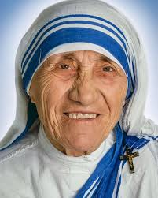

Narayana Murthy
Nagavara Ramarao Narayana Murthy. He is an Indian Billionaire Businessman.
Dr.A.P.J Abdul Kalam
He is an Indian Aerospace Scientist and 11th President Of India.

Mother Teresa
She is known for her selfless attitude towards needy and helpless perople.
Web Designer
She is the Youngest Web Designer and Became the World's Youngest CEO.
Current President Of India
She is the first person belonging to the Santal tribal Community and the first president born in an Independent India.